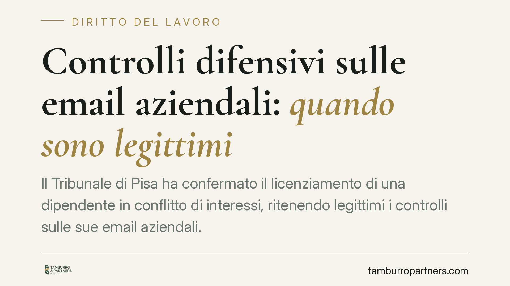

Controlli difensivi sulle email aziendali: quando sono legittimi
Il Tribunale di Pisa ha confermato il licenziamento di una dipendente in conflitto di interessi, ritenendo legittimi i controlli sulle sue email aziendali. La pronuncia ribadisce i tre paletti del cosiddetto controllo difensivo: indizi concreti preesistenti, perimetro temporale limitato e informativa privacy corretta. Un tema che tocca direttamente l'organizzazione del lavoro e il trattamento dei dati.

Il caso
Una lavoratrice addetta alla fatturazione viene licenziata per giusta causa dopo che il datore di lavoro, insospettito da alcuni elementi, verifica le sue email aziendali. Emerge un conflitto di interessi con un fornitore. Il Tribunale di Pisa ha ritenuto legittimo sia il controllo sia il licenziamento, fornendo indicazioni utili su un terreno scivoloso: il confine tra sorveglianza vietata e difesa del patrimonio aziendale.
Inquadramento normativo
Il nodo è l'art. 4 della Legge 300/1970 (Statuto dei Lavoratori), che disciplina i controlli a distanza sull'attività dei lavoratori. La norma, dopo la riforma del 2015, consente l'uso degli strumenti di lavoro — tra cui la posta elettronica — anche a fini disciplinari, ma solo a condizione che il lavoratore abbia ricevuto adeguata informativa sulle modalità d'uso e di controllo, nel rispetto della disciplina sulla protezione dei dati personali.
Accanto all'art. 4 opera la categoria, di origine giurisprudenziale, dei controlli difensivi: verifiche volte non a monitorare la prestazione lavorativa in sé, ma ad accertare condotte illecite già sospettate. La Cassazione ha più volte distinto i controlli difensivi "in senso stretto", attivati quando il sospetto è già fondato su indizi concreti, da quelli preventivi e generalizzati, non ammessi. Sul piano sostanziale, la condotta contestata viola l'art. 2105 c.c., che impone al lavoratore l'obbligo di fedeltà verso il datore.
Cosa dice il Tribunale
La decisione poggia su tre requisiti cumulativi. Primo: il controllo deve nascere da indizi concreti di un illecito già manifestatosi, non da una generica diffidenza. Secondo: l'indagine deve essere circoscritta nel tempo, limitata alle comunicazioni successive al momento in cui il sospetto si è formato, senza frugare retroattivamente nell'intera cronologia. Terzo: deve essere preceduta da una corretta informativa privacy, che renda il lavoratore consapevole delle possibili verifiche.
Rispettati questi presupposti, i dati raccolti sono utilizzabili in sede disciplinare. Nel caso di specie, il conflitto di interessi con il fornitore ha integrato una violazione dell'obbligo di fedeltà tale da giustificare il recesso in tronco.
Implicazioni pratiche
Per il datore di lavoro la pronuncia conferma uno spazio di azione, ma lo recinta con precisione. Non basta sospettare: serve un presupposto documentabile. E non basta avere ragione nel merito: se il controllo è generalizzato, retroattivo o privo di informativa, il rischio è l'inutilizzabilità della prova e, a cascata, l'illegittimità del licenziamento.
Per il lavoratore, la lettura è speculare. L'uso della posta aziendale non è uno spazio privato assimilabile a quello personale: resta uno strumento di lavoro, soggetto alle regole aziendali comunicate in anticipo. La tutela della riservatezza non copre le condotte contrarie all'obbligo di fedeltà.
Il punto più delicato resta la tracciabilità del sospetto. Il datore che intende difendersi deve poter dimostrare *quando* e *perché* è sorto il dubbio, perché è da quel momento che decorre il perimetro temporale lecito del controllo.
Cosa fare in concreto
- Adottate una policy scritta sull'uso degli strumenti aziendali, email comprese, e consegnatela a ogni dipendente con prova di avvenuta ricezione.
- Predisponete un'informativa privacy specifica sui controlli, coerente con la disciplina sulla protezione dei dati e aggiornata.
- Documentate l'insorgere del sospetto: annotate data ed elementi concreti prima di avviare qualunque verifica, così da fissare il momento iniziale del controllo lecito.
- Limitate l'indagine alle comunicazioni successive al sospetto e strettamente pertinenti ai fatti contestati, evitando raccolte massive.
- Fate valutare la procedura a un legale prima di procedere a contestazione disciplinare e licenziamento, per verificare la tenuta della prova.
La materia evolve rapidamente e molto dipende dalle circostanze di fatto. Una verifica corretta sul piano procedurale è spesso ciò che distingue un licenziamento difendibile da uno impugnabile con successo.
Disclaimer
Contributo informativo a cura di Tamburro & Partners - Avv. Giuseppe Tamburro. Non costituisce parere legale.
Ogni storia di lavoro ha i suoi tempi.
Se gestisci HR e vuoi un confronto su contenzioso, ispezioni o licenziamenti, scrivi allo studio. Ti rispondiamo entro un giorno lavorativo.